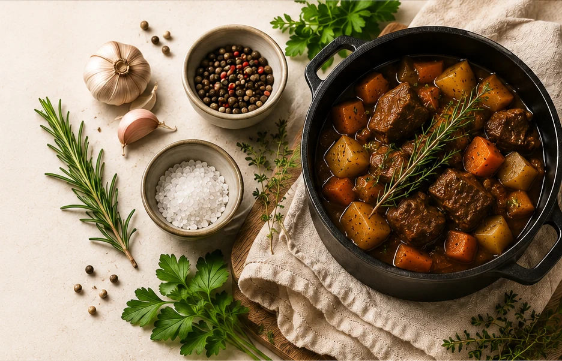

🍊
Persönliche RezeptsammlungKochen.
Kochen.
Bewahren.
Genießen.
Bewährte Familienrezepte, moderne Küchenideen, Thermomix-Rezepte und historische Gerichte aus Friedas Kochbuch – verständlich aufbereitet und dauerhaft gesammelt.

Rezeptkategorien
Was möchtest du kochen?
Rezeptsammlung
Vorhandene Rezepte
6 Rezepte
🥩
🥣
🌿
🍅
🥬
Keine passenden Rezepte gefunden.
Historische Sammlung
Historische Rezepte öffnenFriedas Kochbuch
23 überlieferte Rezepttitel aus dem 19. Jahrhundert – jeweils mit eigener Seite und vorbereitet für Originaltext, moderne Übertragung und heutige Mengenangaben.